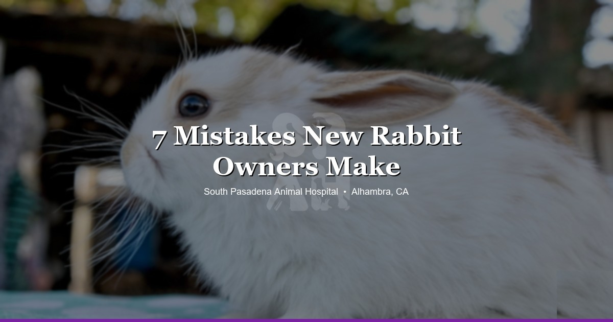

April 2, 2026 · 9 min read
7 Mistakes New Rabbit Owners Make (And We See Every Single One) 🐰

We're going to be straight with you. Rabbits are wonderful pets. They're smart, they're social, they have actual personalities — and when they binky across the living room, it's genuinely one of the best things you'll ever see.
But rabbits are also widely misunderstood. A lot of people get them thinking they're a low-maintenance starter pet, somewhere between a hamster and a cat. They're not. They need real care, real vet visits, and real knowledge about what keeps them healthy.
At South Pasadena Animal Hospital, we see rabbits every single week. And we see the same mistakes over and over. Not because the owners are careless — usually the opposite. They love their rabbit. They just didn't get great information when they started out. So here are the seven we see most, and what to do instead.
Mistake 1: Feeding Too Many Pellets, Not Enough Hay
This is the number one mistake. Bar none. It comes up in almost every new rabbit appointment we do.
Here's what happens: someone brings home a rabbit, buys a bag of pellets, fills the bowl every morning, and wonders a few weeks later why their bunny has soft stool, overgrown teeth, or both. The pellet bag doesn't tell you this, but pellets are a supplement. They're not the main diet. Not even close.
Hay should make up 80% or more of your rabbit's diet. Unlimited timothy hay or orchard grass, available at all times. An adult rabbit gets maybe a tablespoon or two of pellets a day — that's it. The rest is hay, some fresh leafy greens, and water.
Hay does two critical things. It keeps the gut moving (rabbit digestive systems need constant fiber to function), and it wears down the teeth, which grow continuously. Without enough hay, you get dental problems and GI slowdowns. We see both weekly.
Quick SoCal tip: pet store hay is usually stale and overpriced. If you're in the San Gabriel Valley, there are feed stores in the Arcadia and Monrovia area that carry fresh timothy and orchard grass for a fraction of the cost. Way better quality, too. Your rabbit will actually eat it instead of ignoring it.
Mistake 2: Skipping the Spay or Neuter
A lot of rabbit owners don't even know this is a thing. Yes, rabbits can be spayed and neutered. Yes, it matters. A lot.
Let's start with the females, because this is the one that catches people off guard. Unspayed female rabbits have an extremely high risk of uterine cancer. Some estimates put it at 60–80% by age four. That's not a typo. The majority of intact female rabbits will develop uterine adenocarcinoma if they live long enough. Spaying eliminates that risk entirely.
For males, it's less about cancer and more about behavior. Unneutered bucks spray urine (yes, on your walls, your furniture, you), get territorial, and are significantly harder to litter train. After neutering, most of those behaviors drop off within a few weeks.
We do rabbit spays and neuters routinely at our clinic. It's a standard procedure for us. If your rabbit is over four months old and hasn't been fixed, bring it up at your next visit — or book one.
Mistake 3: Not Rabbit-Proofing the House
Rabbits chew. That's not a behavioral problem — that's just what rabbits do. Their teeth grow continuously and they need to gnaw to keep them worn down. The issue is what they choose to gnaw on when you haven't given them better options.
Electrical cords are the big danger. We've seen rabbits come in with burns inside their mouths from biting through live wires. Some get lucky with a small burn. Others aren't lucky. This is completely preventable.
Beyond cords: baseboards, furniture legs, carpet edges, phone chargers left on the floor, shoes, books. If it's within reach and chewable, a rabbit will eventually try it.
For folks in SGV apartments specifically — a lot of units around here have exposed cords running along baseboards for window AC units or portable heaters. Those are exactly at rabbit height. Cover them with cord protectors (split loom tubing works great and costs almost nothing), or reroute them up and over where the rabbit can't reach.
Give your rabbit appropriate things to chew instead: untreated wood blocks, willow sticks, hay-stuffed cardboard tubes. Redirect the behavior, don't try to stop it.
Mistake 4: Using the Wrong Litter
Here's something people don't realize about rabbits: they eat while they poop. It's a whole thing. A rabbit's litter box isn't like a cat's litter box — rabbits sit in there, munch on hay, and do their business simultaneously. It's actually pretty efficient. But it means whatever litter you use, they're in direct prolonged contact with it, and they're probably ingesting some of it.
So when someone uses clay cat litter or clumping litter in a rabbit's box, that's a real problem. Clumping litter can cause GI blockages if ingested. Clay litter creates dust that irritates their respiratory system. Cedar and pine shavings release aromatic oils that are toxic to small animals over time.
What to use instead: paper-based litter like Carefresh or Yesterday's News (recycled paper pellets). Some people just put a thick layer of hay right in the box, which also works. It's simple, it's safe, and rabbits tend to use it consistently.
Mistake 5: Thinking Rabbits Don't Need a Vet
"It's just a rabbit." We hear some version of this more than we'd like. And we get it — historically, rabbits haven't been treated like dogs and cats in terms of routine medical care. But they absolutely need it.
Rabbits should get annual wellness exams. We check their teeth (dental disease is incredibly common), monitor their weight, assess gut health, check for lumps, and talk through diet and housing. These visits catch things early, before they become emergencies.
The harder problem is finding the right vet. Most clinics in the SGV — honestly, most clinics anywhere — primarily see dogs and cats. Some will take a rabbit appointment and do their best, but there's a difference between a clinic that sees one rabbit a month and one that sees several every week. You want the second one. Not "we'll figure it out" but "yeah, we did three of these this week."
If you've never brought your rabbit to a vet before, check out our post on what to expect at your first exotic pet vet visit. It'll walk you through the whole process so there are no surprises.
Mistake 6: Keeping Them in a Cage 24/7
A cage or an x-pen is fine as a home base. Somewhere safe when you're not home, somewhere they can retreat to. But a rabbit that lives in a cage around the clock, with no time to run and stretch and explore? That rabbit is going to have problems.
At minimum, rabbits need three to four hours of free-roam time daily. More is better. This isn't just about mental health (though boredom is real and it manifests as destructive behavior and depression). Exercise is directly tied to gut function. A sedentary rabbit is at higher risk of GI stasis — a potentially fatal slowdown of the digestive system. Movement keeps things moving internally.
Set up a rabbit-proofed room or area. Provide tunnels, cardboard boxes with holes cut in them, things to climb on, things to toss around. Rabbits are more playful than people expect. A toilet paper tube stuffed with hay is genuinely entertaining to them. You don't need to spend a lot of money — you just need to give them space and stimulation.
Mistake 7: Ignoring Subtle Signs of Illness
This one is the hardest to fix because it requires knowing what normal looks like for your specific rabbit. But it matters more than almost anything else on this list.
Rabbits are prey animals. In the wild, looking sick means getting eaten. So they hide it. They're genuinely good at acting fine when they're not fine at all. By the time a rabbit looks obviously sick to you — hunched up, not moving, clearly in distress — they've often been dealing with something for days.
Things to watch for:
- Eating less than usual. Even slightly less. If the hay rack isn't going down as fast as normal, pay attention.
- Smaller or fewer droppings. Rabbit poop is one of the best health indicators you have. Learn what normal looks like and check daily.
- Teeth grinding. Not the soft, gentle purring-grind that means contentment — a loud, hard grinding that means pain.
- Sitting hunched. A rabbit pressing its belly to the ground with its eyes squinted is telling you something hurts.
- Not wanting to move. Especially if they normally come to greet you and suddenly don't.
The biggest mistake within this mistake is waiting. "I'll see if they're better tomorrow." With rabbits, tomorrow can be the difference between a treatable problem and an emergency. We see this more often than we'd like — someone waits a day or two because the rabbit was "still eating a little," and by the time they come in, we're in crisis mode.
When to Wait vs. When to Come In
Not everything is an emergency. But with rabbits, the window between "probably fine" and "this is serious" is smaller than with dogs and cats. Here's a rough guide:
Watch and monitor (a day or so):
- Slightly less active than usual but still eating normally
- One day of slightly smaller droppings, but still producing them
- A single episode of soft stool that resolves on its own
Come in soon (within a day or two):
- Eating noticeably less for 24+ hours
- Persistent runny or mushy stool
- Discharge from the eyes or nose
- Overgrown or misaligned teeth
- A new lump you haven't had checked
Come in now — don't wait:
- Not eating at all
- No droppings for 12+ hours
- Labored breathing or open-mouth breathing
- Limp, unresponsive, or unable to stand
- Straining to urinate or blood in urine
- Head tilt with loss of balance
The Bottom Line
Rabbits are incredible pets when you know what you're getting into. They bond with their people, they have real personalities, and they can live 8–12 years with proper care. That's a real commitment and a real relationship.
Most of these mistakes are just knowledge gaps — not laziness, not neglect. The information people get from pet stores and well-meaning internet forums is often outdated or flat-out wrong. Once you know, you adjust. That's all it takes.
If you're a new rabbit owner in the Los Angeles or San Gabriel Valley area and you want to get started on the right foot — or if you've had your rabbit a while and some of this sounds familiar — we're here. Bring them in for a wellness check, and we'll go through everything together.